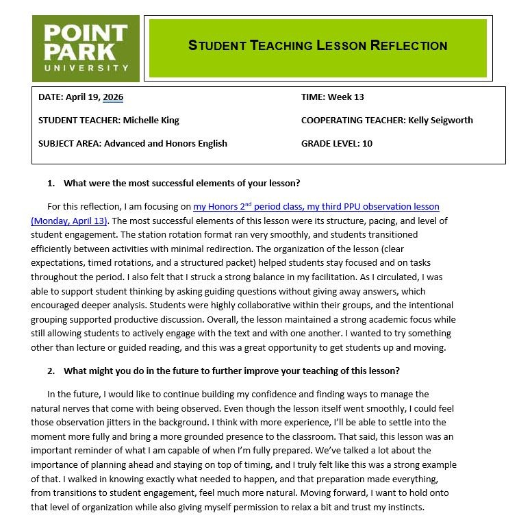
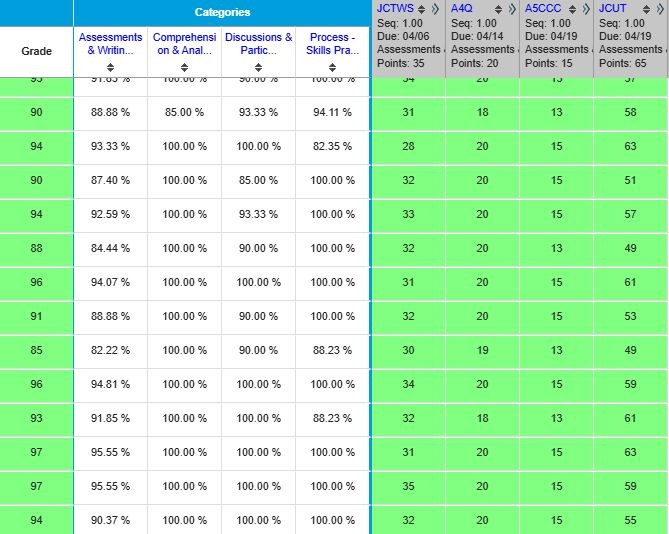
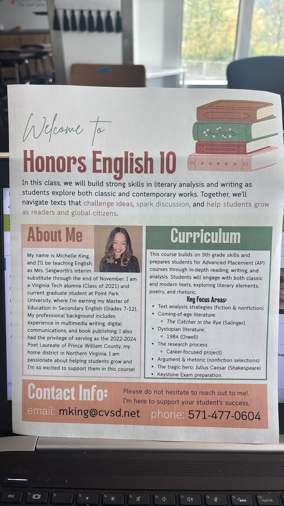
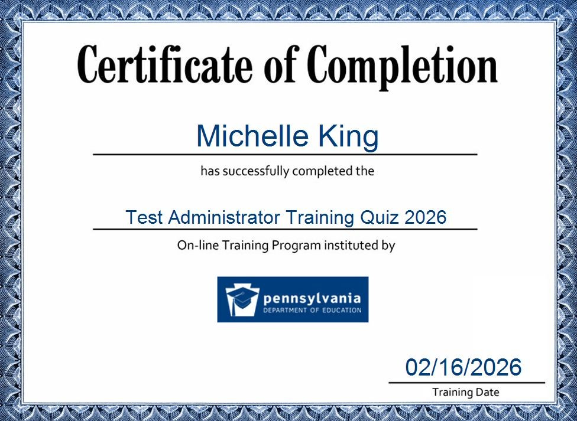
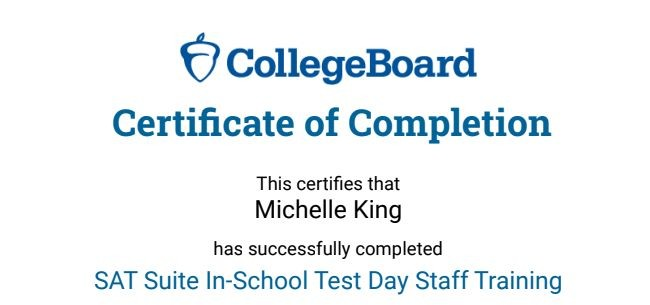
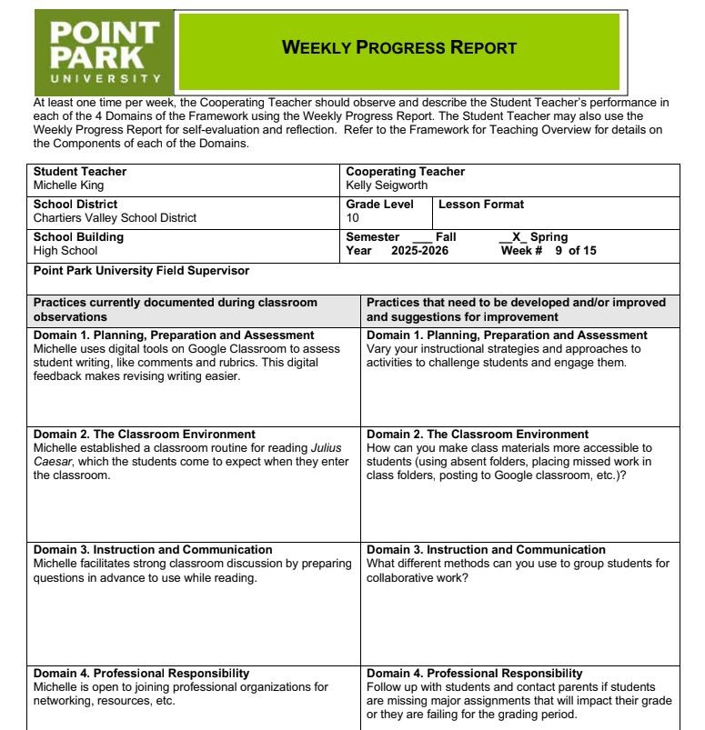

This domain documents how I fulfilled the professional responsibilities of teaching — from reflecting on my own practice and managing student records, to communicating with families, participating in the school community, and continuously developing as an educator.
Component Highlights
Regular written lesson reflections documenting what worked, what changed, and how student responses shaped future instructional decisions.
Independent management of the Infinite Campus gradebook — tracking grades, monitoring missing work, and keeping student progress current and accessible.
An "About Me / About the Class" handout created for Chartiers Valley's Open House Night to introduce myself and establish early home-school connection.
Participation in all-staff meetings, in-service PD days, Act 48 trainings, and certification in AP and Keystone test proctoring.
Attendance at the Pittsburgh Education Recruitment Consortium (PERC) Job Fair — networking with districts and developing professional presence as an emerging educator.
Weekly progress reports from cooperating teacher Mrs. Kelly Seigworth — documenting growth, strengths, and areas for continued development across all four domains.
Throughout student teaching, I regularly reflected in writing on my lessons, classroom management, pacing, student engagement, and instructional choices. Each reflection considered what went well, what I would change, and how students responded to the activity or skill being taught.
Reflection helped me become more intentional and responsive. When a lesson needed more structure, I adjusted directions or added modeling. When students needed more time with a concept, I slowed down and built in extra practice. When an activity went particularly well, I analyzed why, and looked for how I could transfer those strategies to future lessons.
A Week 13 reflection on my Point Park University observation lesson noted the success of the station rotation format, the effectiveness of intentional grouping for collaborative discussion, and a personal goal: to continue building confidence in my facilitation so that observation nerves don't pull me away from being fully present in the moment.

Click or tap any image to enlarge
During student teaching, I managed the Infinite Campus gradebook independently, responsible for entering and updating student grades across assignments, quizzes, projects, and formative assessments for all three sections of Honors and Advanced English 10.
I made sure grades were entered carefully and in a timely manner, missing work was tracked and flagged, and student progress was consistently monitored throughout the Julius Caesar unit. Accurate recordkeeping is not just an administrative task. It is a professional responsibility that directly impacts student awareness of their own progress and the trust families place in the school.

Click or tap any image to enlarge
I had the unique experience of serving as Mrs. Seigworth's long-term substitute from August through December — which meant I was the teacher of record at Chartiers Valley's Open House Night. This gave me an early opportunity to meet students' families, introduce myself, and help establish a positive home-school connection at the very beginning of the year.
To support this communication, I created a professional "About Me / About the Class" handout for families of Honors English 10 students. The handout introduced my background, described the curriculum for the year (including key texts and focus areas), provided contact information, and communicated my commitment to student success.
Families deserve clear, welcoming communication from the people who spend six hours a day with their children. That handout was the first step in building that trust.

Click or tap any image to enlarge
During student teaching, I participated fully in the professional life of Chartiers Valley High School, attending all-staff meetings, in-service professional development days, and Act 48 trainings focused on important school-wide responsibilities including drug safety and suicide prevention.
I also completed official certification in test proctoring for both AP and Keystone testing through the Pennsylvania Department of Education, as well as the College Board's SAT Suite In-School Test Day Staff Training.
Being an active member of the broader school community, not just a classroom teacher, is part of what it means to be a professional educator. These experiences expanded my understanding of school procedures, staff collaboration, and the collective responsibilities that educators share.


Click or tap any image to enlarge
During my student teaching semester, I attended the Pittsburgh Education Recruitment Consortium (PERC) Job Fair, an annual event that connects K-12 professionals with school districts across Pennsylvania and beyond.
At the fair, I networked with representatives from multiple school districts, learned about different teaching opportunities and school cultures, and practiced presenting myself confidently as an emerging educator. The experience helped me build professional connections, clarify the kind of school community I hope to join, and develop the confidence to articulate my teaching philosophy and professional background.
Click or tap any image to enlarge
Mrs. Kelly Seigworth's weekly progress reports document my growth, preparation, and classroom performance across all four domains of the Danielson Framework throughout the student teaching placement.
Her feedback highlighted specific strengths: using digital tools effectively in Google Classroom for assessment and feedback, establishing clear classroom routines for reading and material management, and facilitating strong student discussion through prepared questioning. Areas identified for continued growth included varying instructional strategies across activities and exploring different methods of grouping students for collaborative work.
Throughout my placement, I worked to demonstrate professionalism by being consistently prepared, communicating clearly, accepting and applying feedback, and following through on every responsibility I was given. The progress reports reflect not just how I performed, but how I grew, and my commitment to treating teaching as ongoing, reflective practice rather than a finished product.

Click or tap any image to enlarge